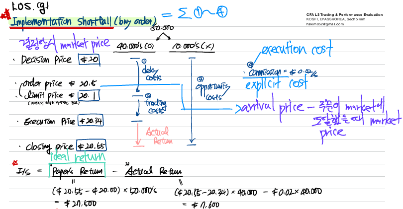

Trading, Performance Evaluation, and Manager Selection
Trade motivation
- profit seeking
- risk management and hedging needs
- cash flow needs
- corporate actions, margin calls, and index reconstitution
Profit seeking
High alpha decay → high trade urgency
low alpha decay → low trade urgency
To minimize information leakage, use dark pools
large size + high urgency → high market impact
high alpha decay → require more aggressive trading
Risk management and hedging needs
rebalancing the portfolio
hedging to remove a risk factor from a portfolio
Cash flow needs
new subscription
redemption
Cash drag
Funds with less liquid holdings will find it difficult to invest new client funds in a short time frame. the low returns of cash cause the fund to underperform the benchmark.
Corporate actions, margin calls, and index reconstitution
M&A, spinoffs
Margin calls on leveraged positions as well as derivatives positions that are suffering losses may require urgent sales of portfolio holdings.
benchmark index reconstitution
Trading strategy inputs
market impact cost
Market impact comes from trading too quickly
execution risk
Execution risk comes from trading too slowly (risk of adverse price movements)
order characteristics
Side refers to the direction of the order (buy, sell, short buyback (cover), or short sell). A list of only buy orders or only sell orders will have greater market risk exposure compared to a list of buys and sells with offsetting market risk exposures.
Absolute size refers to the number of securities being traded. larger orders will have a higher market impact cost than smaller orders.
With relative size, managers will often consider order size as a percentage of average daily volume (ADV). Orders that constitute a higher percentage of ADV are expected to have higher market impact costs.
security characteristics
Security type. Different security types [e.g., underlying securities, ETFs, American depositary receipts (ADRs), global depositary receipt (GDRs), derivatives, and foreign exchange (FX) contracts] trade in different markets with different costs, regulations, and liquidity.
Short-term alpha. For active managers, a high rate of alpha decay requires a more urgent trade strategy. A manager will also have higher urgency in adverse market conditions (i.e., buying into a rising market or selling into a falling market).
Price volatility. High price volatility implies high execution risk, defined as the risk that an adverse price movement will occur over the trading horizon.
Security liquidity. Greater liquidity decreases execution risk and market impact cost. Narrow bid-ask spreads and large volume available for trading (i.e., market depth) are two key indicators of high liquidity.
market conditions
Lower liquidity suggests longer trading horizons; however, higher volatility might cause investors to speed up trades and incur higher costs to avoid execution risk of adverse price movements.
individual risk aversion
A portfolio manager/trader with higher risk aversion is typically more concerned about the market risk of adverse movements in security prices than market impact costs and therefore will trade with more urgency.
Reference prices
Pre-trade benchmarks
Decision price - 사기로 결정한 시점의 가격
Previous close - This is the closing price on the previous day.
Opening price - This is the opening price on the day.
Arrival price - This is the price of the security when the order is sent to the market for execution.
Intraday benchmarks
Volume-weighted average price (VWAP)
- VWAP is not appropriate for lightly-traded stocks.
Time-weighted average price (TWAP) - TWAP may be appropriate for managers who wish to remove the impact of outliers since they believe they are less able to participate in these extreme trades. It is also appropriate in market environments with highly fluctuating volume throughout the day.
- thinly traded and high volatility stock에도 적합
- removes trade outliers
- TWAP is appropriate for minimizing market impact and getting done the trade in one day.
Post-trade benchmarks
- closing price
appropriate for index managers and mutual funds
The most frequently used post-trade benchmark is the closing price, often used by managers who wish to execute at the closing price to reduce the tracking error of the fund. A drawback of this benchmark is the since the closing price is not known until after the trading is completed, a manager cannot assessing trading performance during the trading horizon.
Price target benchmark
Price target benchmarks are prices used by profit-seeking managers aiming to earn short-term alpha, related to the manager’s view of the fair value of the security.
Trading strategy selection
execute trading close to arrival price:
- very liquid
- low urgency
- small order size
low liquid assets → opportunistic
high liquid assets → arrival price
high urgency → arrival price
low urgency → scheduled algorithm
Foreign exchange
- large size → dealer
- small size → DMA
Scheduled order
TWAP
trade at prices close to the market price at the time the order was received → arrival price
Short-term alpha
Objective - trade short-term mispricing in a liquid equity market
Urgency - high
Reference prices - price target benchmark linked to the manager’s estimate of fair value combined with an arrival price benchmark for orders when placed in the market.
Execution method - computer algorithm
Long-term alpha
Objective - Trade over the long term due to changes in fundamental conditions.
Urgency - low
Reference prices - difficult to use in practice
- 거래를 잘 했는지 알기 어려움
Execution method - sell securities gradually over a few weeks in small parts to avoid information leakage and pressure on dealer’s prices.
Risk rebalance
Objective - Rebalance or hedge risk exposure (e.g., reduce risk levels in liquid FX markets by liquidating long and short positions to bring fund volatility down to a target level).
Urgency - low
Reference prices - TWAP
Execution method - algorithmically target TWAP over the next couple of days.
Cash flow driven (client redemption)
Objective - liquidate the holding to meet client redemptions
Urgency - the trade needs to be completed by the end of the trading day
Reference prices - closing price
Execution method - Execute a reasonable amount of liquidity in the closing auction; execute the reminder before the close of trading (e.g., at VWAP)
- VWAP - 오늘 전부 청산해야 함
Cash flow driven (new trade mandate)
Objective - invest new client funds (e.g., invest large amount with a mandate to track a small-cap index with a 3% tracking error). Performance measurement will begin at the current day’s closing price.
Urgency - liquidity is too low to execute in underlying securities by the end of the day, but immediate exposure is required by the client. Liquidity index futures contracts exist.
Reference prices - closing price
Execution method - obtain immediate exposure to index through a long position in index futures to eliminate cash drag. Build underlying stock positions over time to reduce market impact, while simultaneously unwinding the future position.
There are two issues with this method:
- There may not be a closing auction for the futures contract, in which case the futures trade would need to be done as close to the market close as possible.
- The mandate must allow derivatives positions.
Trade execution and strategy implementation
high-touch approaches
- too low liquidity
- large volume
- too urgent
- fixed-income
Principal trades (broker risk trades) - This is where dealer or market makers assume all or some of the risk relating to executing the order, which is priced into their spread. Quote-driven, over-the-counter (OTC), or off-exchange markets are primarily principal trade markets. Principal trades also include request-for-quote (RFQ) markets where market makers do not provide continuous quotes, but only do so on request.
- broker가 거래를 떠안음
- Quote-driven market = price-driven market = dealer market → dealer가 주도
Agency trades - This is where the broker finds the other side of the trade, and risk for order execution remains with the portfolio manager/trader.
Electronic trading
Electronic trading generally involves direct market access (DMA) and/or algorithmic trading.
- order-driven market = auction market
- 구매자 주도
- DMA는 1) when urgent 2) small trades
Algorithmic trading
small order size
Algorithmic trading is the use of programmed rules to electronically trade orders, primarily used for two purposes: profit seeking and trade execution.
Profit-seeking algorithms use real-time market data to determine which securities to buy and sell, and are employed by electronic market makers, quantitative funds, and high-frequency traders.
Execution algorithms trade according to the rule specified by the manager to meet their objectives.
Scheduled algorithms
Scheduled algorithms are appropriate for relatively small orders in liquid markets for managers with less urgency (i.e., greater risk tolerance for longer execution periods) and/or who are concerned with minimizing the market impact.
percent-of-volume (POV), VWAP, and TWAP algorithms. These execute trades using rules driven by historical volumes or specified time periods.
POV algorithms (a.k.a. participation algorithms) send orders according to a volume participation schedule.
- Advantage: They automatically exploit increased liquidity when available.
- Disadvantage: They continue to trade at any (potentially adverse) price, and may not fill the order in a specified time if there is a lack of trading.
- POV has the risk not to completely execute in one day.
VWAP and TWAP algorithms are time-scaling algorithms. VWAP algorithms attempt to match the VWAP price for the period by carving up the trade and sending orders based on historical intraday volumes. The usual intraday volume profile is to trade more at the open and close and less in the middle of the day. TWAP algorithms perform a similar task; however, they ensure an equal number of shares is traded in each time period.
- Advantage - They ensure that a specified number of shares are executed in a specified time period.
- Disadvantage - They may force trades in times of low liquidity or trade too little in times of high liquidity.
Liquidity-seeking algorithms
Liquidity-seeking algorithms (a.k.a. opportunistic algorithms) aim to take advantage of favorable liquidity conditions when offered by the market.
Liquidity-seeking algorithms are appropriate for larger orders in less liquid markets with higher urgency while trying to mitigate the market impact. They are also appropriate when a manger is concerned that displaying limit orders may lead to information leakage, or when liquidity is typically thin with sporadic episodes of high liquidity.
Liquidity-seeking algorithm is needed for large, urgent trades without having substantial market impact. Liquidity-seeking algorithm is also used when managers don’t want to leak information and lead adverse movement.
Arrival price algorithms
Arrival price algorithms seek to trade close to market prices prevailing at the time the order is entered. These algorithms will trade more aggressively (i.e., faster) than other algorithms to trade more shares at close to the arrival price.
Arrival price algorithms are appropriate for relatively small orders in liquid markets for managers who believe prices are likely to move against them during the trade horizon, and therefore wish to trade more aggressively. They are also appropriate for more risk-averse managers who want to minimize execution risk.
Dark strategy/liquidity aggregator
Dark strategies/liquidity aggregators execute trades in dark pools, with aggregator algorithms attempting to optimize trading across multiple dark venues.
Dark strategies/liquidity aggregators are appropriate for large orders in illiquid markets, and arrival price or scheduled algorithms would likely lead to high market impact. Since there is a lower change of execution in dark pools, these strategies are for managers that do not need to execute the full order immediately (less urgency).
SOR
Smart order routes (SORs) are algorithms that determine the best destination (either lit or dark) to route an electronic order to get the best result. SORs focus on getting the best price for market orders, or the highest probability of execution for limit orders.
SORs are appropriate for small market orders with low market impact where the market can move quickly, or for small limit orders with low information leakage where there are multiple potential execution venues.
Clustering
Clustering is a machine learning technique whereby a computer learns to identify which algorithm is optimal for different types of trades based on the key features of trades. the term clustering refers to the technique of grouping trades together with similar attributes.
High-frequency market forecasting
High-frequency market forecasting attempts to model short-term market direction.
Characteristics of key markets
Spot foreign exchange
Spot foreign exchange trading takes place in OTC markets that use both electronic trading and high-touch broker approaches. The market works in three tiers: interbank, interdealer, and bank-to-client, with decreasing trade sizes and increasing spreads, respectively. For large urgent trades, RFQs are used with brokers. For large non-urgent trades, scheduled algorithms or high-touch agency approaches are used. Small trades are usually implemented using DMA.
Implementation shortfall



\[ \text{Implementation shortfall} = \text{paper return} - \text{actual return} \]
\[ IS(bps) = side \times \frac{\text{paper return} - \text{actual return}}{\text{decision price} \times \text{shares}} \]
\[ IS = \text{delay cost} + \text{trading cost} + \text{opportunity cost} + \text{commission} \]
- decision price
- limit price
- arrival price
- execution price
- closing price
\[ \text{delay cost} = \text{arrival price} - \text{decision price} \]
\[ \text{trading cost} = \text{execution price} - \text{arrival price} \]
\[ \text{actual return} = \text{closing price} - \text{execution price} \]
\[ \text{paper return} = \text{closing price} - \text{decision price} \]
\[ \text{opportunity cost} = (\text{closing price} - \text{decision price}) \times \text{number of stocks not traded} \]
Evaluation of trade execution
\[ \text{absolute cost (\$)} = side \times (\text{execution price} - \text{benchmark price}) \times \text{shares executed} \]
\[ \text{trade cost (bps)} = side \times \frac{(\text{execution price} - \text{benchmark price})}{\text{benchmark price}} \times 10000 \]
Market-adjusted cost
\[ \text{index cost (bps)} = side \times \frac{\text{index VWAP} - \text{index arrival price}}{\text{index arrival price}} \times 10000 \]
\[ \text{arrival cost} = side \times \frac{\bar{P} - P_{0}}{P_{0}} \times 10000 \]
\[ \text{market-adjusted cost (bps)} = \text{arrivale cost (bps)} - \beta \times \text{index cost (bps)} \]
Added value
\[ \text{added value (bps)} = \text{total actual cost} - \text{estimated pretrade cost (bps)} \]
Factors that determine the optimal execution approach
- Urgency and size of order
- Liquidity of security (ADV) and the nature of security (e.g., standardized vs. customized)
- Characteristics of available execution venues.
- Investment strategy objectives (e.g., long term vs. short term in nature)
- Reason for the trade
List of eligible brokers and execution venues
The best practice is to establish a best execution monitoring committee (BEMC) consisting of portfolio execution, compliance, and risk personnel that is responsible for maintaining, updating, and distributing the list to parties involved in trade execution.
- High quality of service in terms of competitive execution price or speed of service/trade size capacity
- Financial stability to mitigate counterparty risk
- good reputation for ethical behavioral
- adequate settlement facilities
- competitive explicit costs such as commissions
- willingness to commit capital to principal trades when required for less liquid securities.
Performance evaluation
Macro view - sponsor’s perspective
Micro view - manager’s perspective (mandate에 맞게 운용하였는지)
Performance measurement
Treynor ratio
\[ \text{Treynor ratio} = \frac{R_{p} - r_{f}}{\beta_{p}} \]
Information ratio
\[ \text{Information ratio} = \frac{R_{p} - R_{b}}{\sigma_{p - b}} \]
Appraisal ratio
active return per unit of non-systematic risk
\[ \text{Appraisal ratio} = \frac{\alpha}{\epsilon_{e}} = \frac{R_{p} - R_{b}}{\sigma_{\epsilon}} \]

\[ \sigma_{p}^{2} = \beta_{p}\sigma_{b}^{2} + \sigma_{\epsilon}^{2} \]
Sortino ratio
semi-deviation = downside deviation
\[ \text{Sortino ratio} = \frac{R_{p} - r_{f}}{\sigma_{p, D}} \]
Capture ratios (upside and downside)
concave → capture ratio < 1 / convex → capture ratio > 1
Capture ratio > 1 → more skillful
\[ \text{capture ratio} = \frac{\text{upside capture}}{\text{downside capture}} \]
\[ \text{capture} = \frac{r_{p}}{r_{b}} \]
Drawdown (maximum drawdown, drawdown duration)

Performance attribution
Tracking error is for top-down approach.
source of return
Performance attribution helps explain how performance was achieved.
- account for all of the portfolio’s return and risk exposures
- quantify active decisions
- understanding excess return and risk
\[ P = M + S + A = M + (B - M) + (P - B) \]
where the performance comes from
Return attribution & Risk attribution
Return attribution evaluates the impact of the active portfolio management decisions on the fund’s investment returns.
Risk attribution is the parallel of return attribution but analyzes the impact of the portfolio manager’s active investment decisions on portfolio risk.
Micro attribution vs. Macro attribution
Micro attribution analyzes the portfolio at the portfolio manager’s level and seeks to verify that the portfolio manager did what they said they would and to understand the drivers of the portfolio’s return.
Macro attribution analyzes investment decisions at the fund sponsor’s level; it’s commonly used with institutional investing.
Returns-based
- Advantages
- easy to implement
- does not require holdings data
- Disadvantages
- least accurate because does not consider underlying holdings
- returns data can be manipulated
Holdings-based
- Advantages
- More accurate than returns-based because considers underlying holdings
- Disadvantages
- Needs data on fund holdings
- Mismatch due to trading effect-not appropriate for high turnover active funds with long evaluation periods
Transactions-based
- Advantages
- most accurate method
- Disadvantages
- highest data requirements
- highest complexity
The Brinson-Hood-Beebower (BHB) method
\[ \text{allocation effect}, A_{i} = (w_{i} - W_{i}) \times B_{i} \]
\[ \text{selection effect}, S_{i} = W_{i} \times (R_{i} - B_{i}) \]
\[ \text{interaction effect}, I_{i} = (w_{i} - W_{i}) \times (R_{i} - B_{i}) \]
The Brinson-Fachler (BF) method
\[ \text{allocation effect}, A_{i} = (w_{i} - W_{i}) \times (B_{i} - B) \]
\[ \text{selection effect}, S_{i} = W_{i} \times (R_{i} - B_{i}) \]
\[ \text{interaction effect}, I_{i} = (w_{i} - W_{i}) \times (R_{i} - B_{i}) \]
Factor-based return attribution
Carhart model

Fixed-income return attribution
exposure decomposition - duration based (interest rate exposure)
- duration
- curve shape
- sector selection
- bond selection
yield curve decomposition - duration based (duration exposure)
- yield or income
- roll
- shift
- shape
- spread
- residual - unexplained movements due to the estimation involved in assessing the components above
yield curve decomposition - full-repricing based
The full repricing approach breaks the active returns of the manager down to the individual cash flows that generated the active returns. As such, it is the most precise of the three fixed-income attribution methods and can accommodate the broadest range of instruments and yield curve changes. The drawback of the full repricing method is that it is the most complex method and, therefore, is least likely to be easily understood by the recipient of the output.
Risk attribution

Performance appraisal
quality of manager’s decisions
Performance appraisal determines whether the performance was affected primarily by investment decisions, by the overall market, or by chance.
Benchmarks
Seven characteristics of a valid benchmark (SAMURAI)
- Specified in advance
- Appropriate
- Measurable
- Unambiguous
- Reflective of the manager’s current investment opinions
- Accountable
- Investable
Asset-based benchmarks
Absolute
An absolute benchmark is a return objective that aims to exceed a minimum target return.
Advantages
- simple and straightforward benchmark
Disadvantages
- Absolute return objective is not an investable benchmark.
Broad market indexes
advantages
- Well recognized, easy to understand by client, and widely available
- Unambiguous, generally investable, measurable, and may be specified in advance.
- appropriate to use if it reflects the current investment process of the manager
disadvantages
- manager’s style may deviate from the style reflects in the index (e.g., it is not appropriate to use the S&P 500 for a small-capitalization U.S. growth stock manager)
Style indexes
advantages
- they are widely available, widely understood by clients, and widely accepted
- if the index reflects the manager’s style and it is investable, it is an appropriate benchmark
disadvantages
- some style indexes can contain weightings in certain securities and sectors that may be larger than considered prudent.
- differing definitions of investment style can produce quite different benchmark returns, making them inappropriate benchmarks
factor-model-based
advantages
- it is useful in performance evaluation
- it provides managers and sponsors with insight into the manager’s style by capturing factor exposures that affect an account’s performance
disadvantages
- focusing on factor exposures is not intuitive to all managers or sponsors
- the data and modeling are not always available and may be expensive to obtain
- it may be ambiguous because different factor models can produce different outputs, leading to misspecification
- sensitive to inputs
- data burden
- hard to explain
- correlations changed over time
Returns-based
advantages
- generally easy to use and intuitive
- meets the criteria of a valid benchmark
- useful where the only information available is account returns
disadvantages
- the style indexes may not reflect what the manager own or what the manager or client would be willing to own
- enough monthly returns would be needed to establish a statistically reliable pattern of style exposures
- will not work when applied to managers who change style
Manager universes
advantage
- it is measurable
disadvantages
- manager universes are subject to ‘survivor bias,’ as underperforming managers often go out of business and their performance results are then removed from the universe history.
- Fund sponsors who choose to employ manager universes must rely on the compiler’s representations that the universe has been accurately compiled.
- They cannot be identified or specified in advance, so it is not investable thus, it’s not an acceptable benchmark.
Custom security-based
Custom security-based benchmarks are designed to reflect the manager’s security allocations and investment process.
advantage
- meet all the required benchmark properties and all the benchmark validity criteria
- allows continual monitoring of investment processes
- allow fund sponsors to effectively allocate risk across investment management teams
disadvantages
- it can be expensive to construct and maintain
- a lack of transparency by the manager (e.g., hedge funds) can make it impossible to construct such a benchmark.
Benchmark quality evaluation
Portfolio-market, benchmark-market 간 correlation이 높을 것
hedge funds
- broad market indexes
- not suitable for hedge funds because it use various strategies and different characteristics
- risk-free rate
- lack of correlation with hedge fund returns
- hedge fund peer universes
- backfill bias
- survivorship bias
- appraisal-based benchmark
- return and risk objectives are not suitable for a specific hedge fund
Real estate
- The benchmarks are derived from a sample of the real estate universe, which means they are not completely representative of the real estate asset class.
- The performance of the index probably bears a very high correlation to the largest investments.
- Benchmark returns are self-reported, so some subjectivity and/or bias may be present.
- Benchmarks that are value-based could be biased toward the most expensive properties or geographical areas.
- There is a lack of comparability with benchmark returns given that some benchmarks use leverage while others do not.
- The indexes assume no transaction costs, full transparency, and normal liquidity, which is usually not the case; those factors would impact actual real estate returns.
- lack of consistency in the use of return measure
Private equity
- Benchmarks include managers using different valuation methods.
- IRR may be biased by external cashflows.
Commodities
- basis risk
Managed derivatives
Benchmarks are either strategy-specific or peer group-based. Peer-group benchmarks are similar those used for hedge funds and will potentially exhibit the same issues as hedge fund peer-group-based benchmarks such as survivorship bias.
Distressed securities
- lack of marketability → almost impossible to determine an appropriate benchmark
Manager selection process
due diligence over all the processes
- Manager universe
- quantitative analysis
- excluding managers based on returns
- qualitative analysis
Type I and Type II error
Type I error - incorrectly reject \(H_{0}\) → hiring and retaining bad managers
- 더 심각
- measurable, 조직이 망가짐
Type II error - fail to reject \(H_{0}\) → firing good managers
- not measurable
Preventing Type II Errors
The obvious solution to minimizing Type II errors would be to track the subsequent performance of managers who were not hired as well as those who were fired.
Style analysis
RBSA
top-down approach
little additional data required
relatively easy
difficult to know the impact of multiperiod investment decisions
regression
less accurate for illiquid because of stale pricing
HBSA
bottom-up approach
require more data and complex
not useful for high turnover portfolios
less accurate for illiquid because of stale pricing
window dressing
Investment decision-making process
- idea generation
- signal creation
- idea implementation
- signal capture
- portfolio construction
- portfolio monitoring
Separately managed account
advantages
- customized
- tax efficient
- immediate reporting
- autonomy
- confidential
- clear legal ownership
disadvantages
- high costs
- require extra layer of due diligence
Pooled investment vehicle
- transparent
- lost costs
Investment philosophy
not match with philosophy → style drift exists → not sustainable
Liquidity
ETF → closed-end fund
Open-end funds → mark-to-market fund → NAV gap
Management fee
incentive fee is variable costs → decrease volatility of portfolio
management fee is fixed costs → increase volatility of portfolio
Derivatives
Use derivatives to take risk exposure quickly.
Use equitization to take risk exposure before investing in the target underlying assets.
Dark pools
There is no pre-trade transparency.